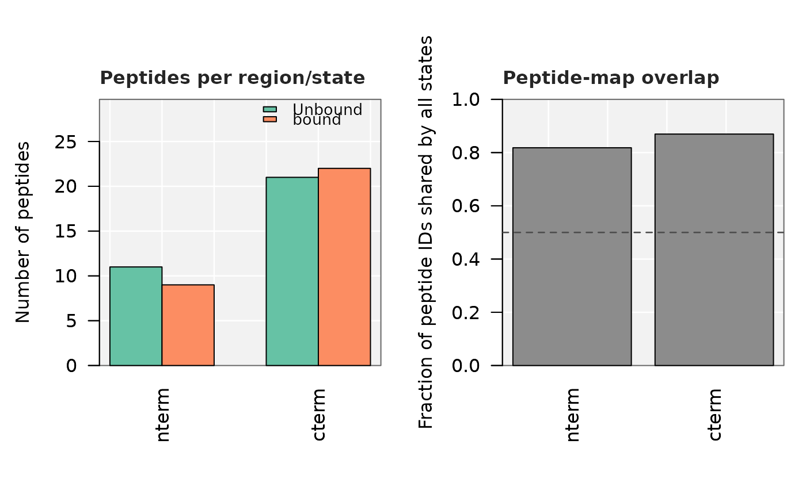

Plot the peptide-map coverage diagnostics from compare_states_unmatched()
Source: R/plot_coverage_diagnostics.R
plot_coverage_diagnostics.Rdcompare_states_unmatched() always returns a coverage diagnostic table
alongside its results, because its whole approach - pooling peptides
without requiring them to match between states - is only trustworthy
when the states being compared actually have similar peptide maps in
that region. This plots that table directly, two panels side by side:
peptide count per region/state (very different counts is itself a
warning sign), and the fraction of peptide identities shared by every
state being compared, per region (low values mean part of any observed
shift may reflect which peptides were identified, not biology - see
compare_states_unmatched()'s Details).
Usage
plot_coverage_diagnostics(
res,
low_threshold = 0.5,
palette = "Set2",
warn_col = "firebrick",
ok_col = "grey55",
bg = "grey95",
grid_col = "white",
show_grid = TRUE,
legend = TRUE,
cex_main = 1,
font_family = ""
)Arguments
- res
the list returned by
compare_states_unmatched()(usesres$coverage;res$summaryis not needed for this plot).- low_threshold
fraction below which a region's shared-peptide bar is drawn in a warning color and a reference line is drawn. Default
0.5.- palette
either a single
RColorBrewerqualitative palette name (default"Set2") or an explicit vector of colors, one per state, for the peptide-count panel.- warn_col
color for a shared-peptide bar below
low_thresholdin the overlap panel. Default"firebrick".- ok_col
color for a shared-peptide bar at or above
low_threshold. Default"grey55".- bg
panel background color. Default
"grey95"; use"white"for a plain white panel.- grid_col
gridline color drawn over
bg. Default"white".- show_grid
logical; draw the shaded background/gridlines at all. Default
TRUE.- legend
logical; draw the state legend on the count panel. Default
TRUE.- cex_main
text size for panel titles. Default
1.- font_family
font family passed to text-drawing calls. Default
""(device default).
Examples
# \donttest{
file_nm <- system.file("extdata", "All_results_table.csv", package = "HDXBoxeR")
res <- compare_states_unmatched(file_nm, times = "1800.00s",
regions = list(nterm = c(1, 100), cterm = c(101, 225)))
plot_coverage_diagnostics(res)

# }